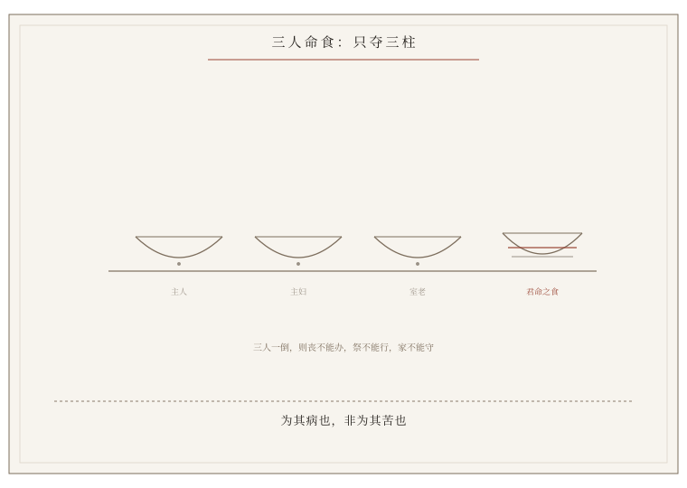

檀弓下 · 四·二十四 · 第 349 课
歠主人、主妇、室老，为其病也，君命食之也。
说什么事：主人、主妇、室老三人啜粥，君命他们吃饭，是因为怕他们病倒。
落在哪一层：以「命」量情。论「夺情之法的边界：只夺三个人」。
为何编在此位：三百四十六至三百四十八论服，此课论食。服是外加的形，食是内里的命。
【经】歠主人、主婦、室老，為其病也，君命食之也。
【注】尊者夺人易也。歠，歠粥也。
【疏】此一节论尊者夺孝子情之法。歠者，亲丧三日之后，歠粥之时。主人，亡者之子；主妇，亡者之妻；室老，家之长相。此三者并是大夫之家贵者，为其歠粥，病困之，故君必有命食疏饭也。／若非三者，虽复歠粥致疾病，君不命食之，以其贱故也。／其士之主人主妇，君不命也。《丧大记》主妇食疏，食谓既殡之后；此主妇歠者，谓未殡前，故《问丧》云：「邻里为之麋粥以饮食之。」
歠 啜饮。歠粥，即只喝稀粥。
主人 亡者之子。
主妇 亡者之妻。
室老 家臣之长，管家之相。
为其病 因为怕他们病倒。
君命食 君命其进食。食，读如饲。
尊者夺人易 在上位者夺下人之情，容易。
主人、主妇、室老三人啜粥，君命他们吃饭，是因为怕他们病倒。
此章记一项极少用的权：君命食。
丧礼三日之后，孝子只啜粥不食。此礼极严，而君可以「命食」，即下令要他吃。注一句「尊者夺人易也」，把这个权的性质说尽：夺情是容易的，因其易，故须有界。
界在两处：只夺三人；只因「病」。
第一层 三人是谁：家之三柱 主人是亡者之子，主妇是亡者之妻，室老是家臣之长。
三个人一倒，则一家之事无人主：丧不能办，祭不能行，家不能守。故君命食之，非为一人，为一家。
礼之「夺情」，从来不是随意的宽纵，是算过代价的救急。
第二层 「为其病也」：夺的理由只有一个 不是「怕他太苦」，是「怕他病」。
苦是可以的，丧礼本就要你苦。病则不可：一病则丧事废，一病则性命危。
此一分别极严：礼不替你减轻苦，只替你免于病。今人劝丧家常说「别太伤心」，其实不合此节的分寸；当说的是「别病倒」。
第三层 「以其贱故也」：一条刺人的界线 疏曰：若非此三者，虽歠粥致疾病，君不命食，以其贱故。
此句今日读来最不舒服。然须看清其所争：君命是有代价的（牵动国中），故只施于「家之柱」。礼在此不是慈悲，是治理。
读者不必为之辩护，也不必因此废其义。看明白一种古制的取舍，比替它找理由更有用。
第四层 士之主人主妇，君不命 疏又曰：士之主人主妇，君不命也。
同是丧家，大夫之家君命，士之家君不命。此见礼之等差不在情，而在「家之轻重」。
士之家小，一子一妇虽病，事犹可支；大夫之家大，三人病则事崩。
第五层 今日之用：救急不救苦 今有丧家，亲友多劝「吃点东西」，孝子多不肯。
此节可借其分寸：劝食的理由当是「你要撑住这件事」，不是「你别难过」。前者是替事，后者是替情。替事者近礼，替情者近慢。
与今日何干 今有丧假制度、有心理干预、有社区协助。此节所示，是古人的思路：在最不愿吃饭的时候，安排一件「必须由你来做」的事，使人不得不吃。此比空劝有效。
| 左 | 右 |
|---|---|
| 歠 | 啜粥 |
| 主人 | 亡者之子 |
| 主妇 | 亡者之妻 |
| 室老 | 家臣之长 |
| 为其病 | 夺情之由 |
| 君命食 | 命其进食 |
| 尊者夺人易 | 故须有界 |
| 士不命 | 家小可支 |
| 贱不命 | 古制之限 |
画三只并置的空碗，视点俯视略斜。碗形素朴，碗内各留一点残粥的痕。三碗之前另置一只满碗，碗中盛饭，饭面平实。四碗排在一条案线上，案线一道。前碗与后三碗之间留一段空。赭色只用在满碗的碗沿。
